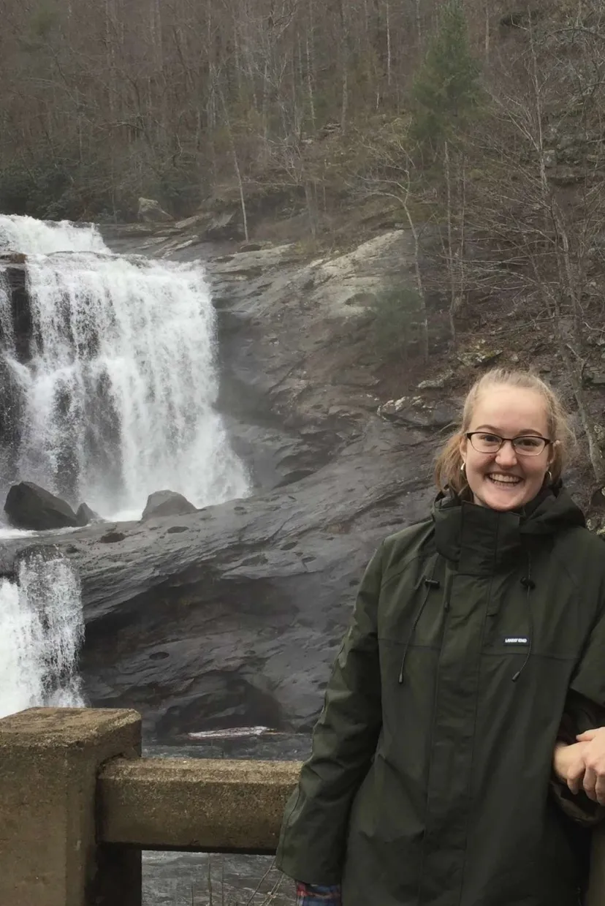
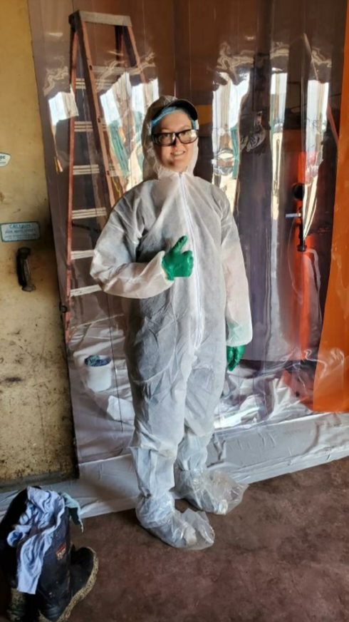

Web Developer
I am a student at Iowa State University.
This website was started as a class project in Spring 2024 for SE/ComS319, a website design class.
I now use this space maintain my portfolio and communicate my career goals.
As a senior at Iowa State University, I am excited to enter the job market. While I enjoy learning at school, I have found in my various internships and jobs that I vastly prefer the kind of work that has a real impact on the world.
It's valuable to make a report based on fake data; it's a whole other thing to make real change in the world when applying the skills I've learned.
I hope you enjoy exploring!

I am originally from Tennessee, and I love hiking in the mountains! Being in the middle of nature is so peaceful.
I took this photo during one of my first times I saw it snowing at Iowa State. There wasn't much, but it's still a treat to see snow.

Work wear means many different things in different jobs. This is from when I was interning at a chemical plant.